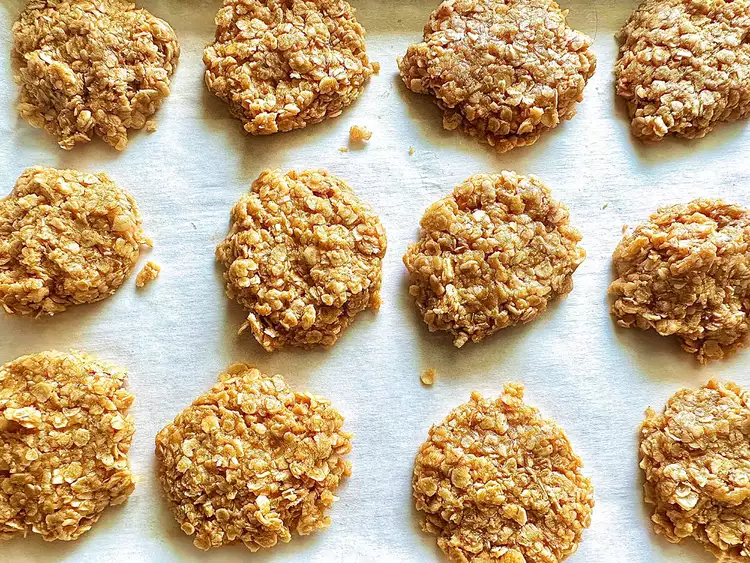

3-Ingredient Peanut Butter Oatmeal Cookies

Description
No-bake 3-ingredient peanut butter oatmeal cookies that are quick and easy to make.
| Prep Time |
Cook Time |
Refrigerate Time |
| 10 mins |
0 mins |
30 mins |
Ingredients
- ½ peanut butter
- 6 tablespoons maple syrup
- 1 ½ rolled oats
Directions
- Line a baking sheet with parchment. Place peanut butter and maple syrup in a microwave safe bowl. Microwave until peanut butter is melted, about 1 minute. Stir in oats.
- Using a medium-sized cookie scoop, drop dough onto prepared baking sheet. Using your fingers, gently pat down dough to form a round cookie.
- Refrigerate until firm, about 30 minutes.
Back